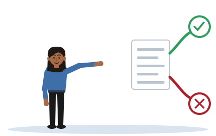

Source for the Claim
[Illustrative example - do not cite] The nine uses described here are invented for practice.
One idea
A source is judged against the use you make of it. The same source can be sound for one claim and wrong for another.

The source
The use